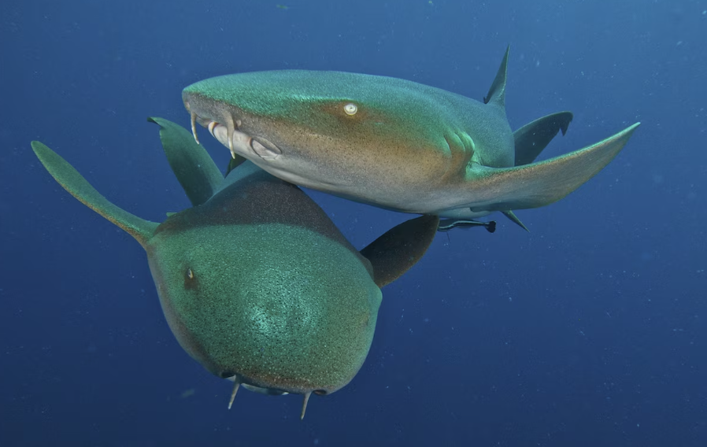
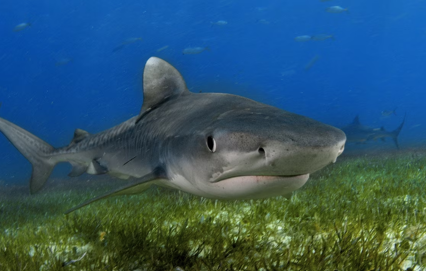
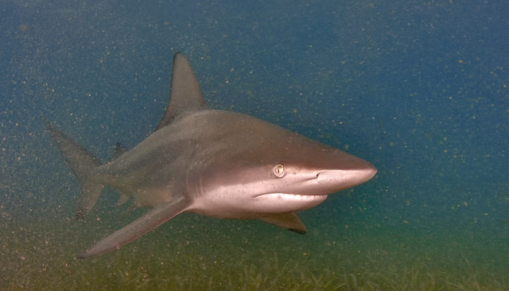

This is the resource I am using to talk about nurse sharks. Althoguh I already know fun facts about them this is a good website I recommend for people willing to leaern about them! It is informative and a trustworthy site!
This is the website I'm using to talk about tiger sharks. National Geographic is the resource I am using for all three sources.
This is the website I'm putting for information on blacktip reef sharks.
